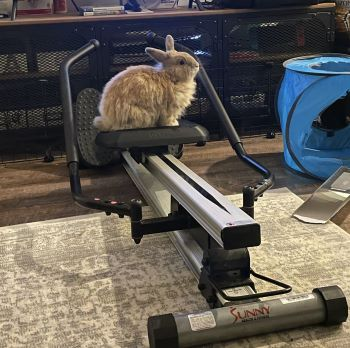
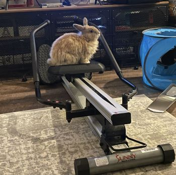
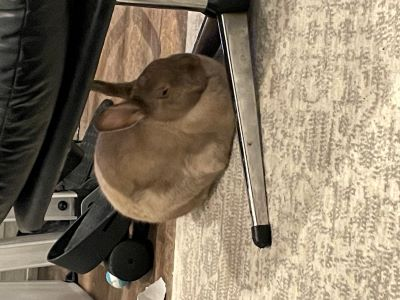
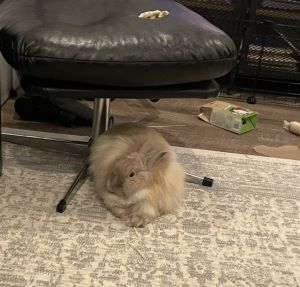
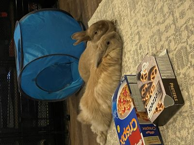
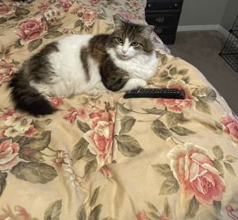
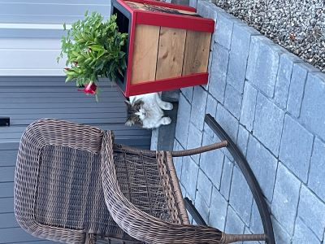
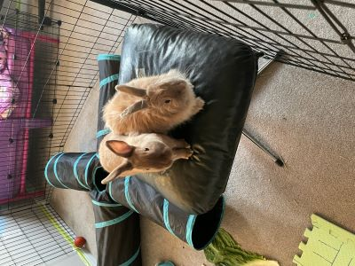
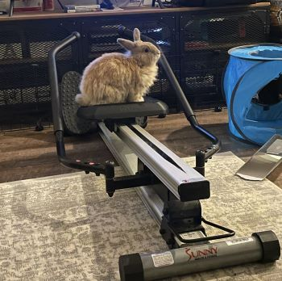
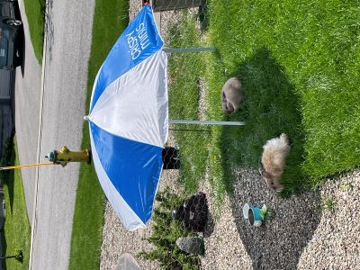

 Meet Nova  and Luna. Luna is Nova's mom and they are best friends . They are always hungry and so they are looking for work.
They are restless, love to keep busy and happen to be avid gardeners. That being said, if you want to make sure they stay on task, their best friend 'Moxie', who is a cat, can help make sure that happens. She likes to lie down and watch tv , but once outside, she is very attentive  and can make sure Luna and Nova don't get off track or take too many breaks.
NewPage They are skilled at chewing, digging and have a knack for rearranging objects. They stay in shape by working out. 
Need your lawn mowed? No problem! They love to eat grass and can trim it to perfection. They are perfect diggers which is ideal for planting any type of plant and with their rearanging skills they can drag the plant into place and fill the hole back up.
When it gets too hot they like to take a break 
They are super easy going for payment. All they want are some tasty treats such as carrots, bananas, strawberries or kale or suprise them with something else, they even enjoy just cardboard boxes.